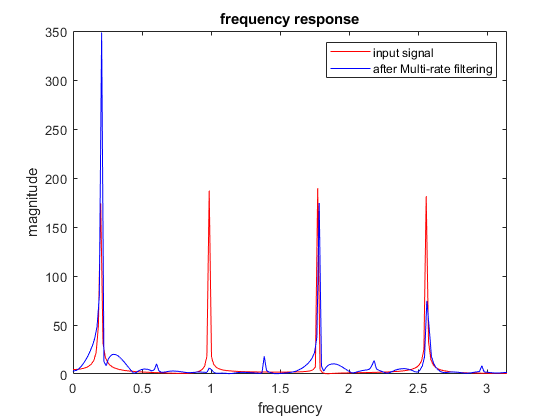

Contents
clear recent data
clear,clc,close all
filter bank
filt1 =xlsread("filters.xls",1);
filt2= xlsread("filters.xls",2);
t=0:1/(2*pi):60;
f1=pi/16;
f2=5*pi/16;
f3=9*pi/16;
f4=13*pi/16;
u=[2 0 1 0.5];
x=cos(2*pi*t*f1)+cos(2*pi*t*f2)+cos(2*pi*t*f3)+cos(2*pi*t*f4);
for i=1:4
filter1=filter(filt1(i,:),1,x);
downsample1=downsample(filter1,4);
ua=u(i)*downsample1;
upsample1=upsample(ua,4);
filter11=filter(filt2(i,:),1,upsample1);
subband(i,:)=filter11;
end
y=sum(subband);
X=fftshift(fft(x));
Y=fftshift(fft(y));
ff1=linspace(-pi,pi,length(X));
ff2=linspace(-pi,pi,length(Y));
plot(ff1,abs(X),'r')
xlim([0 pi]);
hold on
plot(ff2,abs(Y),'b')
xlim([0 pi]);
xlabel('frequency')
ylabel('magnitude')
title('frequency response')
legend('input signal','after Multi-rate filtering')
